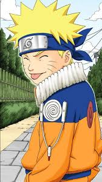
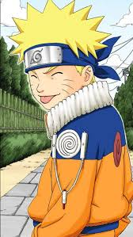
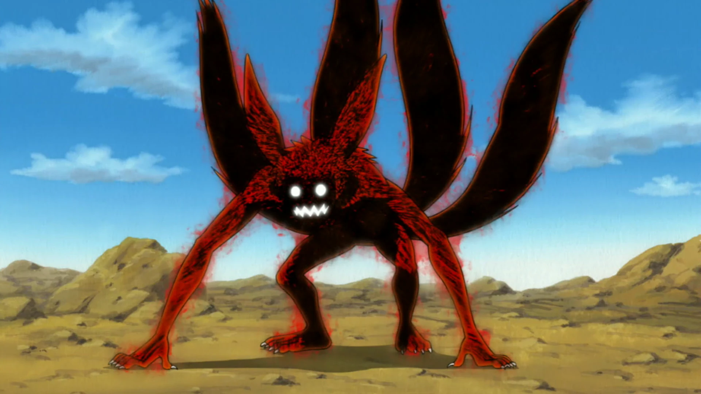

Su vida
Naruto nacio en la aldea de la hoja, hijo de minato el quinto hokage (creo), vivio su vida excluido con el deseo de seguir su camino ninja para ser hokage.
No se como hacer para que solo este el cuadrado blanco
Naruto nacio en la aldea de la hoja, hijo de minato el quinto hokage (creo), vivio su vida excluido con el deseo de seguir su camino ninja para ser hokage.
Es medio tonto, pero muy buena persona ademas de que si lo haces enojar cagaste porque no solo tiene tecnicas muy buenas sino que tambien posee a kurama en su interior, la bestia de las 9 colas.
